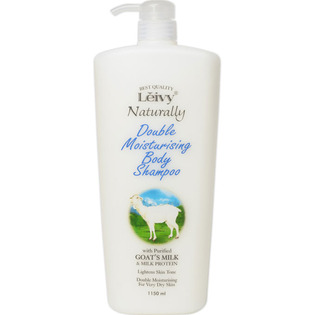

返回列表
产品名称：レイヴィー ボディシャンプー ゴートミルク＆ミルクプロティン

アクシス レイヴィー ボディシャンプー ゴートミルク＆ミルクプロティン １１５０ｍｌ
メーカー アクシス
JANコード 4582194815111
商品の特徴
ゴートミルクは牛乳と比べ脂肪球が小さく、保湿成分が角質層まで浸透しお肌の潤いを長時間保ちます。
成分・分量
用法及び用量
濡らしたネットボールにボディシャンプーを適量取ります。
空気を入れながらよく泡立ててから体を洗ってください。